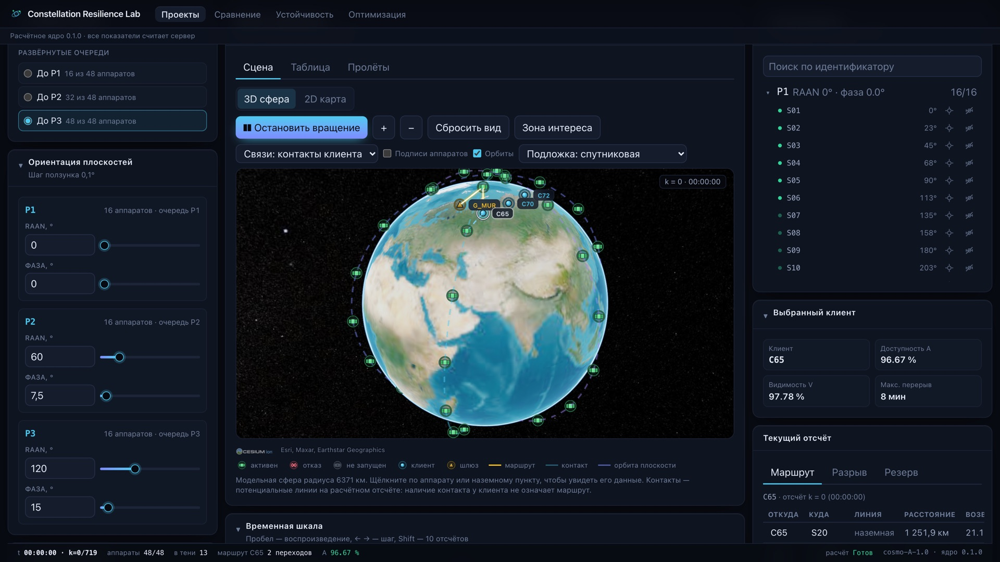
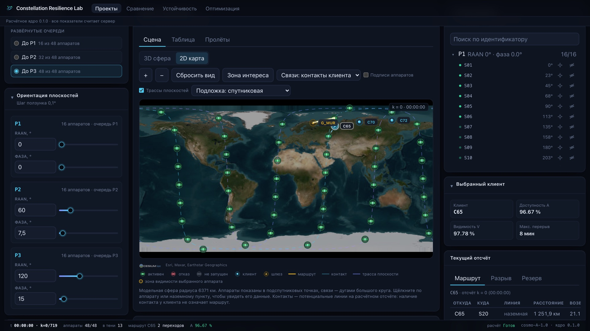
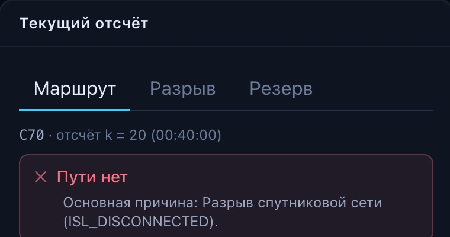

На фоне — живой расчёт по формулам «Описания данных»: орбиты, межспутниковые линии и маршруты до шлюза перестраиваются на каждом кадре.
Тезис кейса
0 %видимость: над пунктом C70 почти всегда есть спутник
0 %доступность: сквозной маршрут до шлюза при ISL 2000 км
Спутник над головой — ещё не связь
Пункт видит аппарат, но данные не доходят: сеть между спутниками рвётся. Сервис раскладывает каждый из 272 отсчётов без пути по причине — без двойного счёта.
1нет видимого аппарата
8нет контакта со шлюзом
263разрыв межспутниковой сети
стенд · сценарий 04 · красное — разрыв межспутниковой сети
Сценарий 04, клиент C70, сетка 720 × 120 с. Разложение совпадает с контрольным из ТЗ.
Алгоритмы маршрутизации · обоснованность
внутри плоскости0
между плоскостями0
маршрутов из 30
Почему при 2000 км кольцо исчезает
Соседи в плоскости стоят через 22,5°. Расстояние между ними — хорда, и фазирование плоскости её не меняет.
При ISL 2000 км все внутриплоскостные линии недоступны при любом RAAN и фазе — сеть держится только на межплоскостных контактах.
Условие кольца 2(R+h)·sin(π/N) < L требует не менее 22 аппаратов в плоскости. Состав менять нельзя, поэтому 90 % при 2000 км — вопрос не подбора, а геометрии.
Переключите дальность: считается та же модель, что в ядре.
Качество кода · документация и запуск5 + 5 баллов
Один расчётный эталон — и всё остальное вокруг него
Геометрия считается только на сервере. У интерфейса нет второй реализации модели: каждое число на экране — результат ядра, с hash сценария и версией.
packages/engine · Python 3.12, NumPy
Расчётное ядро
Контракт cosmo-A-1.0: строгие типы, диапазоны, ссылки, дубликаты
Удобство использования · наглядность покрытия и маршрутов

модельная сфера R = 6371 км · координаты ядра, не WGS84
Сцена показывает ровно то, что посчитано
Активный, отказавший и незапущенный аппарат различаются формой и цветом.
По умолчанию — маршрут и контакты выбранного клиента; полный граф включается отдельно.
Контакты — только на расчётном отсчёте. Между отсчётами линия никогда не выдаётся за доказанную.
Клик по узлу: плоскость, очередь, состояние, координаты, угол возвышения над клиентом, участие в маршруте.
Без WebGL — SVG-сцена и таблица: инженер не остаётся без модели.

2D-карта · те же данные, равнопромежуточная проекция
Алгоритмы маршрутизации15 баллов
Маршрут ищется от шлюза, проверяется отдельно
Multi-source BFS. Спутники с контактом к доступному шлюзу получают расстояние 1; волна идёт только по ISL; клиент выбирает видимый аппарат с минимальным расстоянием. Один обход на отсчёт — для всех клиентов.
Наземный транзит запрещён. Общий обход графа давал 73,19 % и 79,72 % — завышение. Путь строго [client, sat…, gateway].
Три политики — кратчайший по переходам, стабильный, кратчайший по километрам. Доступность у всех одинаковая: это свойство графа, а не алгоритма. Различаются hops, длина и переключения.
Независимый валидатор проверяет все 2160 записей: концы, уникальность узлов, активность и существование каждого ребра на том же отсчёте.
Детерминизм: при равных расстояниях — сортировка по ID. NetworkX — только как тестовый оракул.
Анализ устойчивости · обработка разрывов и отказов10 баллов
Каждый перерыв объяснён и проверен контрфактически
Четыре причины с приоритетом: нет видимого аппарата → все шлюзы недоступны → нет контакта со шлюзом → разрыв сети. Флаги хранятся все, основная — одна: время раскладывается без двойного счёта.
Для разрыва сети видны компоненты: какие аппараты видит клиент, у каких есть выход на шлюз, и почему они не соединены.
При отказе ядро возвращает аппарат при неизменных остальных условиях. Только если путь восстановился — пишем «восстановление устраняет разрыв». Иначе честно: одного аппарата недостаточно.
Резерв — до двух путей без общих спутников через max-flow с расщеплением узлов; при одном шлюзе — предупреждение о единой точке отказа.
сценарий 04 · C70 · k = 20 · контакт есть, пути нет: ISL_DISCONNECTED

карточка отсчёта · основная причина
Маршрут на соседнем отсчёте k = 19
C70 → S30 · 1 695 км · 11,9° S30 → S14 · ISL 1 703 км S14 → G_MUR · 1 731 км · 11,3° 3 перехода · 5 130 км · ≥ 17,1 мс
Проектирование и сравнение конфигураций15 баллов
Сравнение: первая очередь против полной группировки
Показываем не средний процент, а каждого клиента и его перерывы. Рост минимума никогда не выдаётся за улучшение всех пунктов.
Доступность по клиентам · ориентир 90 % отмечен линией
C65 · P396,67 %
C65 · P127,22 %
C70 · P398,75 %
C70 · P115,83 %
C72 · P398,89 %
C72 · P112,64 %
Максимальный перерыв: 8 / 2 / 2 мин → 572 / 658 / 796 мин. Одна плоскость из трёх не держит связь на севере.
Сервер проверяет сопоставимость: разные сетки, пункты или условия связи — сравнение помечается «изменены условия» или отклоняется.
Рекомендация детерминирована: минимум по клиентам → среднее → перерыв. Порядок виден пользователю.
экран «Сравнение» · параметры, показатели, разница в п.п.
Анализ устойчивости · уязвимые аппараты10 баллов
N−1: 48 контрфактических суток за 14 секунд
Каждый запущенный аппарат по очереди исключается на весь горизонт. Ранжируем по худшему клиенту, а не по минимуму сети — иначе ущерб «не худшему» пункту прячется.
S19
−2,36п.п. у C65 · все три направления
S33
−2,36п.п. у C65 · все три направления
S44
−2,36п.п. у C65 · все три направления
S45
−2,36п.п. у C65 · все три направления
Ни один одиночный отказ не выводит полную группировку за 90 %: худший клиент остаётся на 94,31 %.
Но C65 — самый уязвимый пункт: в 67,4 % отсчётов у него единственный вход в сеть; два независимых входа — лишь 29,3 % времени (C70 — 60,0 %, C72 — 71,8 %).
Стресс-набор: отказ шлюза, соседи в плоскости, целая плоскость, случайные отказы с seed. Это стресс-тесты, не вероятность отказа.
«Устойчивость» → «Отказ одного аппарата» · сценарий 01
Анализ устойчивости · пять инструментов на одном экране
Что сломается, почему и где резерв
Кривая развёртывания. Очередь 1 — 12,64 %, очередь 2 — 61,81 %, очередь 3 — 96,67 %. Ориентир достигается только с третьей очереди; между 1 и 2 — +49,17 п.п.
Стресс-набор. Худший случай — отключение плоскости: 60,97 %, перерыв 5 ч 30 мин. Шлюз недоступен 6 часов — 71,67 %. Соседи в плоскости — 87,78 %. Случайные отказы с seed — 94,58 %.
Стратегии маршрутизации. Доступность совпала у всех трёх; путь по расстоянию короче на 161 км и даёт на 72 переключения меньше.
Развёртка по оси. Фаза P1 повторяется каждые 22,5°: размах всего 1,11 п.п. — одной плоскостью номинал не улучшить, нужен совместный поиск шести углов.
62,22 →0 %худший клиент · перерыв 178 → 80 мин · 33 допустимых из 300
«Оптимизация» · 300 точных расчётов · каждый кандидат «проверен расчётом» · применить = новая версия
Обоснованность рекомендаций · ML-ускоритель
ML — честный benchmark, а не обещание
Surrogate предсказывает худшую доступность по sin/cos шести углов и предлагает кандидатов по expected improvement. Каждый кандидат подтверждается точным расчётом.
Метод · бюджет 48
seed 20260911
seed 7
seed 42
Среднее
Вердикт
Точный поиск (DE)
65,00
67,92
67,64
66,85
baseline
Гауссовский процесс
69,86
70,00
68,61
69,49
3 из 3 · +2,64 п.п. · проходит порог
CatBoost
65,69
67,92
65,42
66,34
1 из 3 · −0,51 п.п. · не проходит
Порог из ТЗ: средний выигрыш > 0 и ни одного проигрыша хуже одного отсчёта. Ошибка модели считается только на точках, предложенных до их расчёта. Время прогона 46,7 с против 48,8 с.
Что это значит для продукта
ML — отключаемый режим для коротких бюджетов. При 300 расчётах точный поиск догоняет и обгоняет GP на стрессе.
Прогноз хранится в поле predicted, метрики — в verified. Кандидат без exact Run не может стать рекомендацией.
Нет «сэкономлено N симуляций» без baseline и метода расчёта.
Модель обучается внутри одного Study: другой состав или сетка — новая модель или отключение.
Сценарий 10 отказов теряет ≈ 2 п.п. и 6 минут перерыва.
При ISL 2000 км 90 % не достигаются ни в одном из 300 вариантов: хорда 2700 км. Статус — target_not_found_within_budget, не «недостижимо».
Чувствительность к сетке: 69,17 % на 120 с, 66,60 % на 60 с, 65,73 % на 30 с — десятые доли не заявляем.
Модель геометрическая: без радиобюджета и пропускной способности; задержка — только нижняя оценка.
Как повысить устойчивость — в порядке проверенности
1 · Применить найденное фазирование как новую ревизию. 2 · Держать резерв для S19 / S33 / S44 / S45 — они бьют по всем трём направлениям. 3 · Для C65 нужен второй независимый вход: это следующий рычаг исследования, а не подмена дальности ISL или добавление шлюза.
Работа с входными данными · документация и запуск10 + 5 баллов
Готовы к чужому JSON
Любой файл cosmo-A-1.0 создаёт новый проект: другое число плоскостей, аппаратов, пунктов, шаг и горизонт. Тесты гоняют конвейер от 2 до 60 аппаратов, 1–4 клиентов, 1–3 шлюзов, шаг 7 с, высоты 200–1200 км.
Ошибки адресные: path · code · message. NaN, true вместо числа, дубликат ID, ссылка на несуществующую плоскость, горизонт не кратен шагу — каждая названа по полю.
Исходный JSON хранится без изменений; неизвестные поля сохраняются с пометкой «не участвует в модели».
Экспорт cosmo-A-result-1.0: полный effective_scenario и ровно одна запись на пару «отсчёт — клиент», path: [] при отсутствии пути. Импорт → правка → расчёт → экспорт → импорт даёт те же метрики.
Паспорт эксперимента: hash входа, версия ядра, политика, seed, сетка, длительность. CSV по клиентам.
docker compose up -d --build→localhost:8080→сценарии кейса уже загружены
«Проекты» · исходные примеры только для чтения, импорт файла
Соответствие критериям оценки100 баллов
Где жюри проверяет каждый критерий
Отраслевые эксперты · 50
15
Проектирование и сравнение конфигураций
Конструктор: очередь, RAAN, фаза, отказы · экран «Сравнение» · рекомендация по клиентам
 стенд · сценарий 04 · красное — разрыв межспутниковой сети
стенд · сценарий 04 · красное — разрыв межспутниковой сети стенд · 01 Полная группировка · после расчёта
стенд · 01 Полная группировка · после расчёта сценарий 04 · C70 · k = 20 · контакт есть, пути нет: ISL_DISCONNECTED
сценарий 04 · C70 · k = 20 · контакт есть, пути нет: ISL_DISCONNECTED экран «Сравнение» · параметры, показатели, разница в п.п.
экран «Сравнение» · параметры, показатели, разница в п.п. «Устойчивость» → «Отказ одного аппарата» · сценарий 01
«Устойчивость» → «Отказ одного аппарата» · сценарий 01 кривая развёртывания
кривая развёртывания стресс-набор · seed 20260911
стресс-набор · seed 20260911 стратегии маршрутизации
стратегии маршрутизации развёртка: P1, фазирование, 24 точки
развёртка: P1, фазирование, 24 точки «Оптимизация» · 300 точных расчётов · каждый кандидат «проверен расчётом» · применить = новая версия
«Оптимизация» · 300 точных расчётов · каждый кандидат «проверен расчётом» · применить = новая версия «Проекты» · исходные примеры только для чтения, импорт файла
«Проекты» · исходные примеры только для чтения, импорт файла